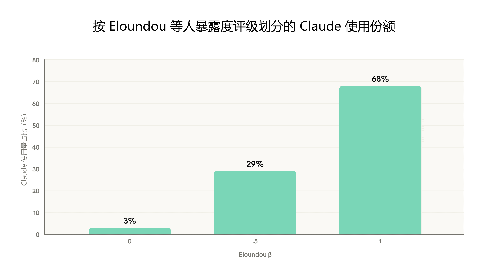
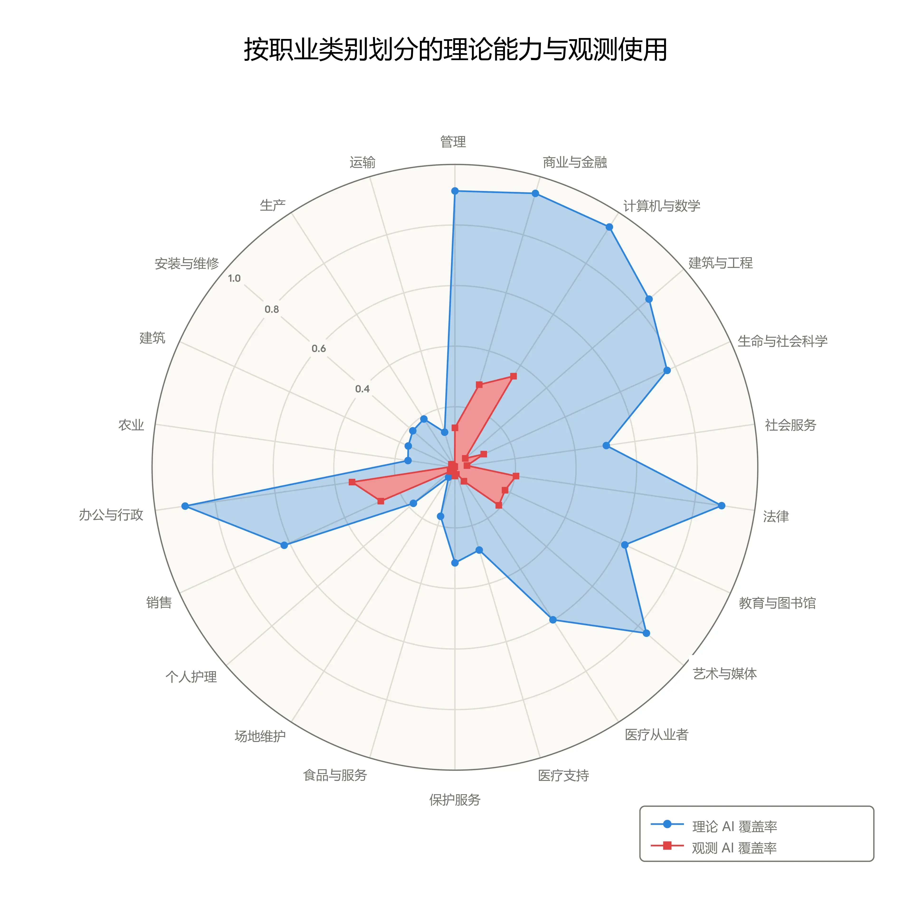
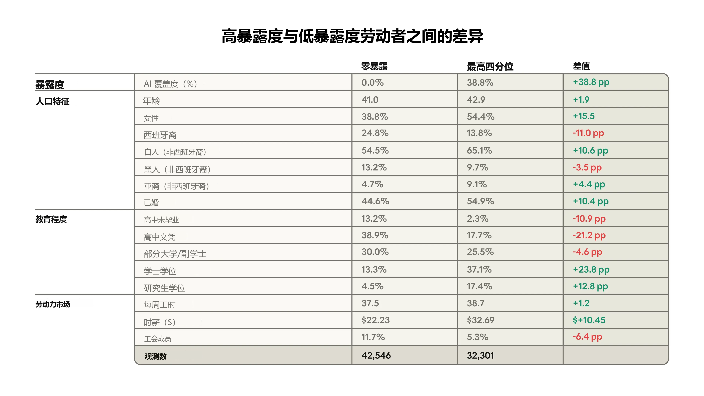
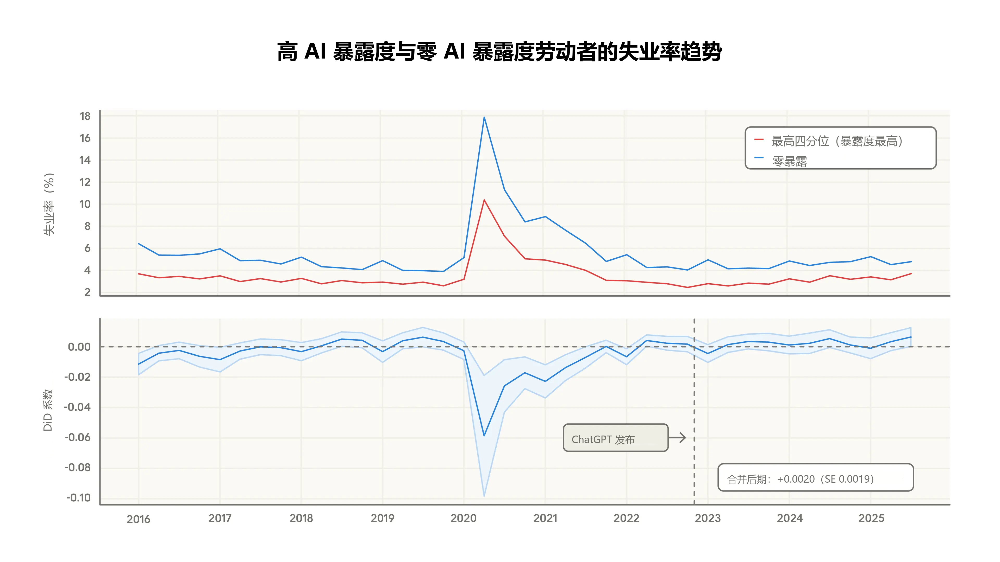
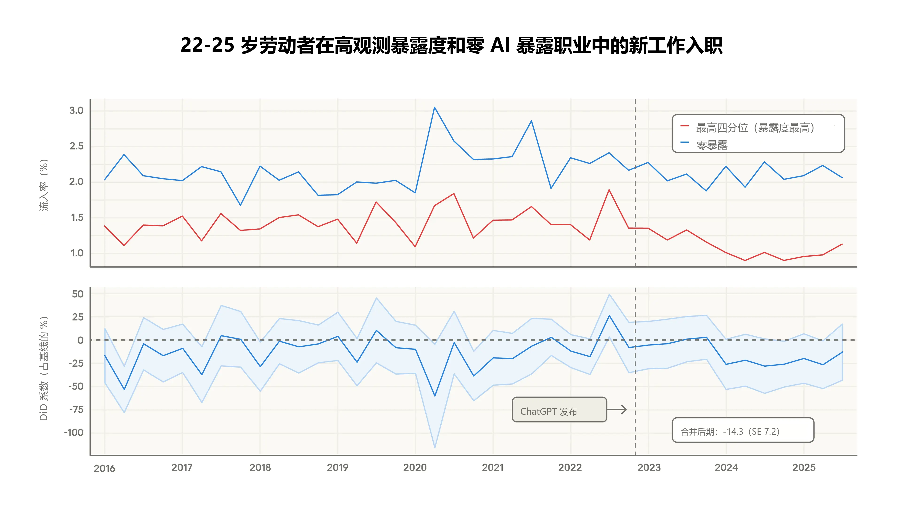

AI的劳动力市场影响：一个新度量与初步证据
📖 中文摘要
专业术语注解
大语言模型（LLM）：通过海量文本训练、能生成和理解自然语言文本的AI模型暴露度（exposure）：某职业的工作任务能被AI替代或加速的程度反事实（counterfactual）：假设某个因素不存在时可能发生的结果，用于因果推断双重差分（difference-in-differences）：对比处理组与对照组在事件前后变化的因果推断方法自动化（automation）：由AI独立完成原本需要人工完成的任务📄 中文全文
- 类别： 经济研究（Economic Research）
- 来源： https://www.anthropic.com/research/labor-market-impacts
经济研究（Economic Research）
2026 年 3 月 5 日
阅读 PDF
主要发现
- 我们引入了一种新的 AI 置换风险度量——观测暴露度（observed exposure）——它结合了理论上的 LLM 能力与真实世界的使用数据，并对自动化（而非增强型）以及与工作相关的用途赋予更高权重
- AI 远未达到其理论能力：实际的覆盖度仍然只是可行范围的一小部分
- 观测暴露度较高的职业，美国劳工统计局（BLS）预测其在 2034 年前的增长率更低
- 暴露度最高职业中的劳动者更可能是年龄较大、女性、受教育程度更高、收入更高的人群
- 自 2022 年底以来，我们没有发现高暴露度劳动者失业率的系统性上升，但我们发现了暗示性证据：在暴露度较高的职业中，年轻劳动者的招聘速度有所放缓
引言
AI 的快速扩散正在催生一波衡量和预测其对劳动力市场影响的研究浪潮。但过去方法的表现记录让我们有理由保持谦逊。
例如，一个著名的衡量工作可离岸化程度（offshorability）的尝试将美国约四分之一的工作认定为易受影响，但十年之后，这些工作中的大多数仍然保持着健康的就业增长。政府自己的职业增长预测虽然方向正确，但除了对过去趋势的线性外推之外，几乎没有增加预测价值。即便是事后回顾，重大经济冲击对劳动力市场的影响也常常是不清楚的。关于工业机器人就业效应的研究得出了相互矛盾的结论，而与中国贸易冲击相关的失业规模至今仍在争论之中。[1]
在本文中，我们提出了一个理解 AI 劳动力市场影响的新框架，并用早期数据对其进行了检验，发现迄今为止 AI 影响就业的证据有限。我们的目标是建立一种衡量 AI 如何影响就业的方法，并定期重新审视这些分析。这种方法无法捕捉 AI 重塑劳动力市场的每一条渠道，但通过在显著效应显现之前打下这些基础，我们希望未来的发现能比事后分析更可靠地识别出经济扰动。
AI 的影响有可能是显而易见的。这个框架在效应模糊不清时最有价值——它可以在置换变得可见之前帮助识别最脆弱的就业岗位。
反事实
当效应又大又突然时，因果推断更容易。COVID-19 疫情及配套政策措施造成的经济扰动如此显著，以至于对许多问题来说，复杂的统计方法都是不必要的。例如，失业率在疫情最初几周急剧上升，几乎不给其他解释留空间。
然而，AI 的影响可能不太像 COVID，而更像互联网或与中国的贸易。其效应可能不会立即从总失业数据中显现；贸易政策和商业周期等因素可能会干扰对趋势线的解读。
一种常见的方法是比较 AI 暴露程度更高或更低的劳动者、公司或行业之间的结果，以将 AI 的效应与混杂力量分离开来。[2] 暴露度通常是在任务层面定义的：例如，AI 可以批改作业，但不能管理课堂，因此教师被认为比那些整个工作都可以远程完成的劳动者暴露度更低。
我们的工作遵循这种基于任务的方法，纳入理论 AI 能力和真实世界使用的度量，然后再聚合到职业层面。[3]
衡量暴露度
我们的方法结合了三个来源的数据。
- O*NET 数据库，它列出了美国约 800 个独特职业相关的任务。
- 我们自己的使用数据（如 Anthropic 经济指数所衡量的）。
- Eloundou 等人（2023）的任务层面暴露度估计，这些估计衡量了 LLM 在理论上是否有可能将一项任务的速度至少提高一倍。
Eloundou 等人的指标 β 用一个简单的量表给任务打分：如果一项任务可以仅靠 LLM 将速度提高一倍则为 1，如果它需要构建在 LLM 之上的额外工具或软件则为 0.5，否则为 0。[4]
为什么实际使用会低于理论能力？一些理论上可能的任务可能因为模型限制而没有出现在使用中。另一些任务则可能因为法律限制、特定的软件要求、人工验证步骤或其他障碍而扩散缓慢。例如，Eloundou 等人将「批准药物补充并为药房提供处方信息」标记为完全暴露（β=1）。我们没有观察到 Claude 执行这项任务，尽管这个评估似乎是正确的——理论上它确实可以被 LLM 加速。
话虽如此，这些理论能力和实际使用的度量是高度相关的。如图 1 所示，在之前四期经济指数报告中观察到的任务中，97% 属于 Eloundou 等人评为理论上可行（β=0.5 或 β=1.0）的类别。

图 1：按 Eloundou 等人任务暴露度评级划分的 Claude 使用份额此图显示了按理论 AI 暴露度分组的 O*NET 任务上的 Claude 使用分布。评为 β=1（仅靠 LLM 完全可行）的任务占观察到的 Claude 使用的 68%，而评为 β=0（不可行）的任务仅占 3%。Claude 使用数据来自前四期经济指数报告。
一种新的职业暴露度度量
我们的新度量——观测暴露度——旨在量化：在 LLM 理论上可以加速的任务中，哪些实际上在专业环境中出现了自动化使用？理论能力涵盖了更广泛的任务范围。通过跟踪这一差距如何缩小，观测暴露度能够在经济变化出现时提供洞见。
我们的度量在定性上捕捉了我们认为是就业影响预测因子的 AI 使用的几个方面。在以下情况下，职业的暴露度更高：
- 其任务在理论上可以用 AI 完成
- 其任务在 Anthropic 经济指数[5]中出现了大量使用
- 其任务在与工作相关的语境中执行
- 其自动化使用模式或 API 实现的份额相对更高
- 其受 AI 影响的任务在整个角色中占更大份额[6]
我们在附录中给出了数学细节。如果理论上 LLM 可完成的任务在 Claude 流量中出现了足够多与工作相关的使用，我们就将其视为已覆盖。然后我们根据任务的执行方式进行修正：完全自动化的实现获得全部权重，而增强型使用获得一半权重。最后，将任务层面的覆盖度量按花在每项任务上的时间比例加权，平均到职业层面。
图 2 显示了观测暴露度（红色）与 Eloundou 等人的 β（蓝色）的对比，说明了我们平台上理论使用与实际使用的差异，并按大类职业分组。我们的计算方法是：先按我们的时间占比度量加权平均到职业层面，再按总就业人数加权平均到职业类别层面。例如，β 度量显示，在计算机与数学（94%）和办公与行政（90%）职业的大多数任务中，LLM 都有渗透空间。

图 2：按职业类别划分的理论能力与观测暴露度LLM 理论上可以执行的工作任务份额（蓝色区域）与我们从使用数据得出的自己的工作覆盖度量（红色区域）。
红色区域描绘了来自 Anthropic 经济指数的 LLM 使用，显示了人们在专业环境中如何使用 Claude。覆盖度显示，AI 远未达到其理论能力。例如，Claude 目前仅覆盖了计算机与数学类别中全部任务的 33%。
随着能力进步、采用扩散、部署加深，红色区域将增长以覆盖蓝色区域。还有一大片未覆盖的区域；当然，许多任务仍然超出 AI 的能力范围——从修剪树木和操作农机等体力农业工作，到在法庭上代表客户等法律任务。
图 3 显示了在此度量下暴露度最高的十个职业。与其他显示 Claude 被广泛用于编码的数据一致，计算机程序员位居榜首，覆盖度为 75%，其次是客户服务代表，我们越来越多地在第一方 API 流量中看到其主要任务。最后是数据录入员，其主要任务——阅读源文档并录入数据——实现了显著的自动化，覆盖度为 67%。
 图 3：暴露度最高的职业 使用我们的任务覆盖度量得出的暴露度最高的十大职业。
图 3：暴露度最高的职业 使用我们的任务覆盖度量得出的暴露度最高的十大职业。
在最低端，30% 的劳动者覆盖度为零，因为他们的任务在我们的数据中出现频率过低，达不到最低阈值。这个群体包括，例如，厨师、摩托车修理工、救生员、调酒师、洗碗工和更衣室服务员。
暴露度如何与预测的就业增长和劳动者特征相对应
美国劳工统计局（Bureau of Labor Statistics，BLS）定期发布就业预测，最新一期于 2025 年发布，涵盖对 2024 年至 2034 年每个职业就业变化的预测。在图 4 中，我们将我们的工作层面覆盖度量与他们的预测进行了比较。
一项按当前就业加权的职业层面回归发现，观测暴露度越高的工作，其增长预测越弱。覆盖度每增加 10 个百分点，BLS 的增长预测就下降 0.6 个百分点。这提供了一定的验证，表明我们的度量与劳动力市场分析师的独立估计结果一致，尽管这种关系很微弱。有趣的是，仅使用 Eloundou 等人的度量则不存在这种相关性。
 图 4：BLS 预测的 2024-2034 年就业增长 vs. 观测暴露度
图 4：BLS 预测的 2024-2034 年就业增长 vs. 观测暴露度
分箱散点图，共 25 个等大小分箱。每个实心点显示一个分箱的平均观测暴露度和预测就业变化。虚线显示按当前就业水平加权的简单线性回归拟合。小菱形标记了个别示例职业，仅供说明。
图 5 使用当前人口调查（Current Population Survey）的数据，显示了在 ChatGPT 发布前的三个月（2022 年 8 月至 10 月）暴露度最高四分位数中的劳动者和暴露度为零的 30% 劳动者的特征。[7] 这两个群体差异很大。暴露度较高的群体是女性的可能性高 16 个百分点，是白人的可能性高 11 个百分点，是亚裔的可能性几乎是两倍。他们的平均收入高 47%，受教育程度也更高。例如，拥有研究生学位的人在未暴露群体中占 4.5%，但在暴露度最高的群体中占 17.4%，相差近四倍。

图 5：高暴露度与低暴露度劳动者之间的差异，当前人口调查结果优先级排序
有了这些暴露度量，问题就是该观察什么了。研究者采取了不同的方法。例如，Gimbel 等人（2025）使用当前人口调查跟踪职业构成的演变。他们的论点是，AI 导致的任何重要的经济重组都会表现为就业分布的变化。（他们发现，到目前为止，变化并不显著。）Brynjolfsson 等人（2025）使用薪资处理公司 ADP 的数据按年龄组考察就业水平，而 Acemoglu 等人（2022）和 Hampole 等人（2025）分别使用 Burning Glass（现为 Lightcast）和 Revelio 的职位发布数据。
我们将失业作为优先结果，因为它最直接地捕捉了经济损害的可能性——一个失业的劳动者想要工作，却还没有找到。在这种情况下，职位发布和就业不必然意味着需要政策回应；一个高暴露度角色的职位发布下降可能会被相关角色的职位增加所抵消。AI 带来的大多数有害的劳动力市场发展，理应包含一段失业率上升的时期，因为被置换的劳动者在寻找替代工作。当前人口调查非常适合跟踪这一点，因为失业的受访者会报告他们之前的工作和行业。
初步结果
接下来我们研究失业趋势，将我们的职业层面度量与当前人口调查的受访者进行匹配。
解读我们的覆盖度时的一个关键问题是：哪些劳动者应被视为「受处理」？仅仅 10% 的任务覆盖度就应该预期就业变化吗？Gans 和 Goldfarb（2025）表明，如果 O 型环（O-ring）模型最能描述工作，那么只有当所有任务都有一定程度的 AI 渗透时，就业效应才可能出现。Hampole 等人（2025）认为，平均暴露度会降低劳动需求，但暴露度_集中_在特定任务中可以抵消这一点。而 Autor 和 Thompson（2025）则强调了剩余任务所需的专业水平。
着眼于简洁性，并注意到我们最关心的是重大影响，我们将分析集中在这样的理念上：影响应该首先在平均暴露度最高的群体中感受到。我们将时间加权任务覆盖度最高四分位数中的劳动者与最低四分位数中的劳动者进行比较。如果 AI 能力快速进步，较低百分位的覆盖度可能也会很高，这可能使绝对阈值更有帮助。但我们假设影响应首先作用于暴露度最高的劳动者，并展示我们用于定义「受处理」的截断点变化时的结果。
图 6 的上图显示了自 2016 年以来暴露度最高四分位数中的劳动者和未暴露群体的失业率原始趋势。在 COVID 期间，AI 暴露度较低的劳动者——他们更可能从事线下工作——失业率的上升幅度要大得多。此后，两个群体的趋势大体相似。下图在双重差分框架中衡量暴露度最高与最低劳动者之间差距的大小，与原始数据的发现相呼应。自 ChatGPT 发布以来，这一差距的平均变化很小且不显著，这表明暴露度较高群体的失业率略有上升，但该效应与零无法区分。[8]

图 6：观测暴露度最高四分位数和零 AI 暴露劳动者的失业率趋势，当前人口调查上图显示暴露度最高四分位数中的劳动者（红线）与暴露度为零的 30% 劳动者的失业率。下图在双重差分框架中衡量这两个序列之间的差距。
这个框架可以识别出什么样的情景？根据合并估计的置信区间，大约 1 个百分点的失业率差异增长将是可检测的（随着新数据的到来这将会变化，所以这只是一个粗略估计）。如果最高 10% 内的所有劳动者都被解雇，那将使最高四分位数群体内的失业率从 3% 上升到 43%，并使总失业率从 4% 上升到 13%。
一个较小但仍然令人担忧的影响将是这样一种情景：「白领大衰退」。在 2007-2009 年大衰退期间，美国的失业率从 5% 翻倍到 10%。暴露度最高四分位数的失业率如果翻倍，将从 3% 上升到 6%。这在我们的分析中也应该是可见的。请注意，我们的核心估计是基于暴露组与暴露度较低组相比失业率的_差异_变化。如果所有劳动者的失业率平行上升，我们不会将其归因于仍让许多任务不受影响的 AI 进步。
一个特别令人担忧的群体是年轻劳动者。Brynjolfsson 等人报告称，22 至 25 岁劳动者在暴露职业中的就业下降了 6-16%。他们将这种下降主要归因于招聘放缓，而不是离职增加。[9]
我们发现，暴露职业中年轻劳动者的失业率持平（见附录）。但招聘放缓不一定表现为失业率上升，因为许多年轻劳动者是劳动力市场的新进入者，在 CPS 数据中没有列出的职业，而且他们可能退出劳动力大军而不是以失业者身份出现。为了直接处理招聘问题，我们使用 CPS 的面板维度，统计年轻（22-25 岁）劳动者在暴露度更高与更低职业中开始新工作的百分比随时间的变化。图 7 显示了年轻劳动者的月度求职成功率（即劳动者报告了一个上个月没有的工作），按他们进入的是高暴露度还是低暴露度职业进行划分。

图 7：22-25 岁劳动者在高观测暴露度和零 AI 暴露职业中的新工作入职，当前人口调查上图显示年轻劳动者在高暴露度与零暴露度职业中开始新工作的百分比。下图在双重差分框架中衡量这两个序列之间的差距。
除了 2020-2021 年的一些大幅波动外，这些序列在 2024 年出现视觉上的分化，年轻劳动者进入暴露职业的相对可能性降低。在暴露度较低的职业中，求职成功率保持稳定在每月 2%，而进入暴露度最高工作的比例下降了大约半个百分点。在 ChatGPT 时代之后的平均估计中，暴露职业的求职成功率与 2022 年相比下降了 14%，尽管这只是勉强达到统计显著。（25 岁以上的劳动者没有这种下降。）
这可能提供了 AI 对就业早期效应的一些信号，并与 Brynjolfsson 等人的发现相呼应。但也有几种替代解释。没有被录用的年轻劳动者可能留在现有工作中、从事其他工作，或者重返学校。另一个与数据相关的注意事项是，工作转换可能更容易在调查中被错误测量。[10]
讨论
本报告引入了一种衡量 AI 劳动力市场效应的新度量，并研究了其对失业和招聘的影响。职业对 AI 的暴露程度取决于其任务在理论上是否可由 LLM 完成，以及是否在我们平台上以自动化、与工作相关的用例出现。我们发现，计算机程序员、客户服务代表和金融分析师是暴露度最高的职业之一。使用来自美国的调查数据，我们发现暴露度最高职业中劳动者的失业率没有受到影响，尽管有初步证据表明，22-25 岁劳动者进入这些职业的招聘略有放缓。
我们的工作是编制 AI 对劳动力市场影响目录的第一步。我们希望本报告中所采取的分析步骤，尤其是围绕覆盖度和反事实的部分，能够在就业和 AI 使用的新数据出现时易于更新。一种成熟的方法可能有助于未来的观察者从噪声中分离出信号。
目前的工作还有几处可以改进。我们的使用数据将纳入未来的更新中，形成经济中任务和工作覆盖度不断演变的图景。Eloundou 等人的度量也可以更新，因为它与 2023 年初的 LLM 能力挂钩。而且，鉴于围绕年轻劳动者和劳动力市场新进入者的暗示性结果，一个关键的下一步可能是研究具有暴露领域学历的应届毕业生如何驾驭劳动力市场。
附录
可在此处获取。
致谢
作者：Maxim Massenkoff 和 Peter McCrory。 感谢：Ruth Appel、Tim Belonax、Keir Bradwell、Andy Braden、Dexter Callender III、Miriam Chaum、Madison Clark、Jake Eaton、Deep Ganguli、Kunal Handa、Ryan Heller、Lara Karadogan、Jennifer Martinez、Jared Mueller、Sarah Pollack、David Saunders、Carl De Torres、Kim Withee 和 Jack Clark。 我们还要感谢 Martha Gimbel、Anders Humlum、Evan Rose 和 Nathan Wilmers 对本报告早期版本的反馈。
引用
@online{massenkoffmccrory2026labor,
author = {Maxim Massenkoff and Peter McCrory},
title = {Labor market impacts of AI: A new measure and early evidence},
date = {2026-03-05},
year = {2026},
url = {https://www.anthropic.com/research/labor-market-impacts},
}
参考文献
Acemoglu, Daron and Pascual Restrepo, "Robots and Jobs: Evidence from US Labor Markets," Journal of Political Economy , 2020, 128 (6), 2188–2244. Acemoglu, Daron, David Autor, Jonathon Hazell, and Pascual Restrepo, "Artificial intelligence and jobs: Evidence from online vacancies," Journal of Labor Economics , 2022, 40 (S1), S293–S340. Appel, Ruth, Maxim Massenkoff, Peter McCrory, Miles McCain, Ryan Heller, Tyler Neylon, and Alex Tamkin, "Anthropic Economic Index report: economic primitives," 2026. Autor, David H, David Dorn, and Gordon H Hanson, "The China syndrome: Local labor market effects of import competition in the United States," American Economic Review , 2013, 103 (6), 2121–2168. Autor, David H, & Thompson, N. (2025). Expertise. NBER Working Paper, (w33941). Blinder, Alan S et al., "How many US jobs might be offshorable?," World Economics , 2009, 10 (2), 41. Borusyak, Kirill, Peter Hull, and Xavier Jaravel, "Quasi-experimental shift-share research designs," The Review of Economic Studies , 2022, 89 (1), 181–213. Brynjolfsson, Erik, Bharat Chandar, and Ruyu Chen, "Canaries in the coal mine? six facts about the recent employment effects of artificial intelligence," Digital Economy , 2025. Eckhardt, Sarah and Nathan Goldschlag, "AI and Jobs: The Final Word (Until the Next One)," Economic Innovation Group (EIG), August 2025. Available at: https://eig.org/ai-and-jobs-the-final-word/ Eloundou, Tyna, Sam Manning, Pamela Mishkin, and Daniel Rock, "Gpts are gpts: An early look at the labor market impact potential of large language models," arXiv preprint arXiv:2303.10130, 2023, 10. Fujita, S., Moscarini, G., & Postel-Vinay, F. (2024). Measuring employer-to-employer reallocation. American Economic Journal: Macroeconomics , 16(3), 1-51. Gans, Joshua S. and Goldfarb, Avi, "O-Ring Automation," NBER Working Paper No. 34639, December 2025. Available at SSRN: https://ssrn.com/abstract=5962594 Gimbel, Martha, Molly Kinder, Joshua Kendall, and Maddie Lee, "Evaluating the Impact of AI on the Labor Market: Current State of Affairs," Research Report, The Budget Lab at Yale, New Haven, CT October 2025. Available at: https://budgetlab.yale.edu. Graetz, Georg and Guy Michaels, "Robots at Work," Review of Economics and Statistics , 2018, 100 (5), 753–768. Hampole, Menaka, Dimitris Papanikolaou, Lawrence DW Schmidt, and Bryan Seegmiller, "Artificial intelligence and the labor market," Technical Report, National Bureau of Economic Research 2025. Handa, Kunal, Alex Tamkin, Miles McCain, Saffron Huang, Esin Durmus, Sarah Heck, Jared Mueller, Jerry Hong, Stuart Ritchie, Tim Belonax, Kevin K. Troy, Dario Amodei, Jared Kaplan, Jack Clark, and Deep Ganguli, "Which Economic Tasks are Performed with AI? Evidence from Millions of Claude Conversations," 2025. Hui, Xiang, Oren Reshef, and Luofeng Zhou, "The short-term effects of generative artificial intelligence on employment: Evidence from an online labor market," Organization Science , 2024, 35 (6), 1977–1989. Johnston, Andrew and Christos Makridis, "The labor market effects of generative AI: A difference-in-differences analysis of AI exposure," Available at SSRN 5375017, 2025. Massenkoff, Maxim, "How predictable is job destruction? Evidence from the Occupational Outlook," 2025. Working Paper. Ozimek, Adam, "Overboard on Offshore Fears," 2019. https://papers.ssrn.com/sol3/papers.cfm?abstract_id=3777307 Tamkin, Alex and Peter McCrory, "Estimating AI productivity gains from Claude conversations," 2025. Tomlinson, K., Jaffe, S., Wang, W., Counts, S., & Suri, S. (2025). Working with AI: measuring the applicability of generative AI to occupations. arXiv preprint arXiv:2507.07935.
脚注 1. 工作可离岸化：Blinder 等人（2009）和 Ozimek（2019）；政府增长预测：Massenkoff（2025）；机器人：Graetz 和 Michaels（2018）以及 Acemoglu 和 Restrepo（2020）；中国冲击：Autor 等人（2013）和 Borusyak 等人（2022）。 2. Brynjolfsson 等人（2025）使用 Eloundou 等人（2023）的任务暴露度度量和 ADP 的薪资数据，比较了 AI 暴露度更高与更低职业中劳动者的就业趋势。Johnston 和 Makridis（2025）使用美国行政数据做了类似的基于任务的分析，但他们将处理聚合到行业层面。Hui 等人（2024）研究了 Upwork 上的自由职业工作如何响应 ChatGPT 和高级图像生成工具的发布，在每种工具发布日期的前后比较了直接受影响类别与未受影响类别中的劳动者。Hampole 等人（2025）使用历史大学招聘网络作为公司级 AI 采用的工具变量：那些历史上从毕业生后来进入 AI 相关岗位的大学招聘的公司，面临着更低的采用成本。 3. 我们的任务和职业层面暴露度量可以方便地纳入其他使用数据，并可扩展到不同国家。我们打算随着时间推移将这种方法应用于新的场景。 4. 在他们的框架中，「直接暴露」的任务是指使用 LLM（有 2,000 字输入限制且无法访问近期事实）可以将完成时间缩短一半的任务。「使用工具暴露」的任务是指使用可以访问例如信息检索和图像处理软件的 LLM 可以达到同样加速效果的任务。未暴露的任务则无法使用 LLM 将持续时间缩短 50% 或更多。 5. 我们使用前两期 Anthropic 经济指数数据集，涵盖 2025 年 8 月和 11 月的使用情况。对于语义高度相似的 ONET 任务，我们在它们之间拆分计数。 6. 每一步都涉及判断。Eloundou 等人（2023）的度量应该以 {0, 0.5, 1} 还是其他形式进入？什么决定「显著」使用？我们如何处理那些与高使用任务非常相似、但因过于稀少而未被经济指数抽样专门捕捉到的任务？自动化工作流应该比增强多计多少？一个令人安心的发现是（我们在附录中详细说明），在这些问题的许多分辨率下，职业暴露度的 Spearman（秩-秩）相关性都非常高。 7. 为了将 ONET-SOC 代码与 CPS 中的 occ1990 代码匹配，我们使用了 Eckhart 和 Goldschlag（2025）提供的交叉对照表。 8. 我们在附录中以三种方式进一步探讨了这一点。首先，我们考察用于定义「受处理」的百分位截断点是否重要，将其从中位数变化到第 95 百分位。在所有情况下，影响都是持平或负的（意味着暴露组的失业率下降）。其次，我们特别关注年轻劳动者，即 Brynjolfsson 等人（2025）中的 22 至 25 岁人群。最后，我们使用劳工部的失业保险申领人数据来衡量失业，而非 CPS 调查回复。在任何扩展中，我们都没有发现对暴露职业的明确影响。 9. 这个范围很宽，因为作者针对多个反事实提供了估计。6 个百分点的下降是与就业增长持平的反事实相比较的。16 个百分点的估计来自一个比较同一公司中不同职业的相似劳动者的设计。 10. 参见 Fujita 等人（2024）。
更正
更新于 2026 年 3 月 8 日：修正了图 7，该图错误地颠倒了最高四分位数与零暴露群体的流入率标签。
相关内容
了解更多关于 Claude 数学能力的信息
Claude 的一个未发布的研究版本在与黎曼猜想相关的问题上取得了进展。它改进了黎曼 zeta 函数满足该猜想的零点比例的一个长期未破的下界，将其从 41.6% 提高到 67.2%。 了解更多
用 Claude 发现密码学弱点
密码学算法。第一个攻击显著削弱了 HAWK——一种为未来量子计算机能够破解现有标准的世界而构建的数字签名方案。第二个攻击发现了一种攻击轮数缩减的 AES（使用最广泛的对称密码）的新方法。 了解更多
Project Pilot：AI 能操控无人机吗？
我们与 Andon Labs 合作，开发了一系列新的评估来测试 AI 模型使用飞行无人机的能力，最终形成了一个新的基准：Drone-Bench。 了解更多
▸ 英文原文（点击展开）
Labor market impacts of AI: A new measure and early evidence
- Category: Economic Research
- Source: https://www.anthropic.com/research/labor-market-impacts
Economic Research
Labor market impacts of AI: A new measure and early evidence
Mar 5, 2026
Read in PDF
Key findings
- We introduce a new measure of AI displacement risk, observed exposure , that combines theoretical LLM capability and real-world usage data, weighting automated (rather than augmentative) and work-related uses more heavily
- AI is far from reaching its theoretical capability: actual coverage remains a fraction of what's feasible
- Occupations with higher observed exposure are projected by the BLS to grow less through 2034
- Workers in the most exposed professions are more likely to be older, female, more educated, and higher-paid
- We find no systematic increase in unemployment for highly exposed workers since late 2022, though we find suggestive evidence that hiring of younger workers has slowed in exposed occupations
Introduction
The rapid diffusion of AI is generating a wave of research measuring and forecasting its impacts on labor markets. But the track record of past approaches gives reason for humility. For example, a prominent attempt to measure job offshorability identified roughly a quarter of US jobs as vulnerable, but a decade on, most of those jobs maintained healthy employment growth. The government’s own occupational growth forecasts, while directionally correct, have added little predictive value beyond linear extrapolation of past trends. Even in hindsight, the impact of major economic disruptions on the labor market is often unclear. Studies on the employment effects of industrial robots reach opposing conclusions, and the scale of job losses attributed to the China trade shock continues to be debated.1 In this paper, we present a new framework for understanding AI’s labor market impacts, and test it against early data, finding limited evidence that AI has affected employment to date. Our goal is to establish an approach for measuring how AI is affecting employment, and to revisit these analyses periodically. This approach won't capture every channel through which AI could reshape the labor market, but by laying this groundwork now, before meaningful effects have emerged, we hope future findings will more reliably identify economic disruption than post-hoc analyses. It is possible that the impacts of AI will be unmistakable. This framework is most useful when the effects are ambiguous—and could help identify the most vulnerable jobs before displacement is visible.
Counterfactuals
Causal inference is easier when the effects are large and sudden. The COVID-19 pandemic and accompanying policy measures caused economic disruption so stark that sophisticated statistical approaches were unnecessary for many questions. For example, unemployment jumped sharply in the early weeks of the pandemic, leaving little room for alternative explanations. The impacts of AI, however, might be less like COVID and more like the internet or trade with China. The effects may not be immediately clear from aggregate unemployment data; factors like trade policy and the business cycle could cloud interpretations of trend lines. One common approach is to compare outcomes between more or less AI-exposed workers, firms, or industries, in order to isolate the effect of AI from confounding forces.2 Exposure is typically defined at the task level: AI can grade homework but not manage a classroom, for example, so teachers are considered less exposed than workers whose entire job can be performed remotely. Our work follows this task-based approach, incorporating measures of theoretical AI capability and real-world usage, before aggregating to occupations.3
Measuring exposure
Our approach combines data from three sources. 1. The O*NET database, which enumerates tasks associated with around 800 unique occupations in the US. 2. Our own usage data (as measured in the Anthropic Economic Index). 3. Task-level exposure estimates from Eloundou et al. (2023), which measure whether it is theoretically possible for an LLM to make a task at least twice as fast.
Eloundou et al.’s metric, β, scores tasks on a simple scale: 1 if a task can be doubled in speed by an LLM alone, 0.5 if it requires additional tools or software built on top of the LLM, and 0 otherwise.4
Why might actual usage fall short of theoretical capability? Some tasks that are theoretically possible may not show up in usage because of model limitations. Others may be slow to diffuse due to legal constraints, specific software requirements, human verification steps, or other hurdles. For example, Eloundou et al. mark “Authorize drug refills and provide prescription information to pharmacies” as fully exposed (β=1). We have not observed Claude performing this task, although the assessment seems correct in that it could theoretically be sped up by an LLM.
That said, these measures of theoretical capability and actual usage are highly correlated. As Figure 1 shows, 97% of the tasks observed across the previous four Economic Index reports fall into categories rated as theoretically feasible by Eloundou et al. (β=0.5 or β=1.0).
Figure 1: Share of Claude usage by Eloundou et al. task exposure rating
This figure shows Claude usage distributed across O*NET tasks grouped by their theoretical AI exposure. Tasks rated β=1 (fully feasible for an LLM alone) account for 68% of observed Claude usage, while tasks rated β=0 (not feasible) account for just 3%. Data on Claude usage comes from the previous four Economic Index reports.
A new measure of occupational exposure
Our new measure, observed exposure , is meant to quantify: of those tasks that LLMs could theoretically speed up, which are actually seeing automated usage in professional settings? Theoretical capability encompasses a much broader range of tasks. By tracking how that gap narrows, observed exposure provides insight into economic changes as they emerge. Our measure qualitatively captures several aspects of AI usage that we think are predictive of job impacts. A job's exposure is higher if: * Its tasks are theoretically possible with AI * Its tasks see significant usage in the Anthropic Economic Index5 * Its tasks are performed in work-related contexts * It has a relatively higher share of automated use patterns or API implementation * Its AI-impacted tasks make up a larger share of the overall role6
We give mathematical details in the Appendix. We count tasks that are theoretically capable with an LLM as covered if they have seen sufficient work-related usage in Claude traffic. We then adjust for how the task is being carried out: fully automated implementations receive full weight, while augmentative use receives half weight. Finally, the task-level coverage measures are averaged to the occupation level weighted by the fraction of time spent on each task.
Figure 2 shows observed exposure (in red) compared to β from Eloundou et al. (in blue), illustrating the difference between theoretical and actual use on our platform, grouped by broad occupational categories. We calculate this by first averaging to the occupation level weighting by our time fraction measure, then averaging to the occupation category weighting by total employment. For example, the β measure shows scope for LLM penetration in the majority of tasks in Computer & Math (94%) and Office & Admin (90%) occupations.
Figure 2: Theoretical capability and observed exposure by occupational category
Share of job tasks that LLMs could theoretically perform (blue area) and our own job coverage measure derived from usage data (red area).
The red area, depicting LLM use from the Anthropic Economic Index, shows how people are using Claude in professional settings. The coverage shows AI is far from reaching its theoretical capabilities. For instance, Claude currently covers just 33% of all tasks in the Computer & Math category.
As capabilities advance, adoption spreads, and deployment deepens, the red area will grow to cover the blue. There is a large uncovered area too; many tasks, of course, remain beyond AI's reach—from physical agricultural work like pruning trees and operating farm machinery to legal tasks like representing clients in court.
Figure 3 shows the ten occupations most exposed under this measure. In line with other data showing that Claude is extensively used for coding, Computer Programmers are at the top, with 75% coverage, followed by Customer Service Representatives, whose main tasks we increasingly see in first-party API traffic. Finally, Data Entry Keyers, whose primary task of reading source documents and entering data sees significant automation, are 67% covered.
Figure 3: Most exposed occupations Top ten most exposed occupations using our task coverage measure.
At the bottom end, 30% of workers have zero coverage, as their tasks appeared too infrequently in our data to meet the minimum threshold. This group includes, for example, Cooks, Motorcycle Mechanics, Lifeguards, Bartenders, Dishwashers, and Dressing Room Attendants.
How exposure tracks with projected job growth and worker characteristics
The US Bureau of Labor Statistics (BLS) publishes regular employment projections, with the latest set, published in 2025, covering predicted changes in employment for every occupation from 2024 to 2034. In Figure 4, we compare our job-level coverage measure to their predictions.
A regression at the occupation level weighted by current employment finds that growth projections are somewhat weaker for jobs with more observed exposure. For every 10 percentage point increase in coverage, the BLS’s growth projection drops by 0.6 percentage points. This provides some validation in that our measures track the independently derived estimates from labor market analysts, although the relationship is slight. Interestingly, there is no such correlation using the Eloundou et al. measure alone.
Figure 4: BLS projected employment growth from 2024—2034 vs. observed exposure
Binned scatterplot with 25 equally-sized bins. Each solid dot shows the average observed exposure and projected employment change for one of the bins. The dashed line shows a simple linear regression fit, weighted by current employment levels. The small diamonds mark individual example occupations for illustration.
Figure 5 shows characteristics of workers in the top quartile of exposure and the 30% of workers with zero exposure in the three months before ChatGPT was released, August to October 2022, using data from the Current Population Survey.7 The groups are very different. The more exposed group is 16 percentage points more likely to be female, 11 percentage points more likely to be white, and almost twice as likely to be Asian. They earn 47% more, on average, and have higher levels of education. For example, people with graduate degrees are 4.5% of the unexposed group, but 17.4% of the most exposed group, an almost fourfold difference.
Figure 5: Differences between high and low exposure workers, Current Population Survey
Prioritizing outcomes
With these exposure measures in hand, the question is what to look for. Researchers have taken different approaches. For example, Gimbel et al. (2025) track changes in the occupational mix using the Current Population Survey. Their argument is that any important restructuring of the economy from AI would show up as changes in distribution of jobs.¹ (They find that, so far, changes have been unremarkable.) Brynjolfsson et al. (2025) look at employment levels split by age group using data from the payroll processing firm ADP, while Acemoglu et al. (2022) and Hampole et al. (2025) use job posting data from Burning Glass (now Lightcast) and Revelio, respectively. We focus on unemployment as our priority outcome because it most directly captures the potential for economic harm—a worker who is unemployed wants a job and has not yet found one. In this case, job postings and employment do not necessarily signal the need for policy responses; a decline in job postings for a highly exposed role may be counteracted by increased openings in a related one. Most harmful labor market developments of AI should arguably include a period of increased unemployment, as displaced workers search for alternatives. The Current Population Survey is well suited to tracking this, as unemployed respondents report their previous job and industry.
Initial results
We next study trends in unemployment, matching our occupation-level measures to respondents in the Current Population Survey.
A key question in interpreting our coverage measure is which workers should be considered treated? Should changes in employment be expected from just 10% task coverage? Gans and Goldfarb (2025) show that if an O-ring model best describes jobs, employment effects might be seen only when all tasks have some degree of AI penetration. Hampole et al. (2025) argue that mean exposure decreases labor demand, but concentration of exposure in only certain tasks can counteract this. And Autor and Thompson (2025) highlight the level of expertise required for the remaining tasks.
With an eye toward simplicity, and noting that we are most concerned with large impacts, we center our analysis on the idea that impacts should be felt most in the groups with the highest mean exposure. We compare workers in the top quartile of time-weighted task coverage to those in the bottom. If AI capabilities advance quickly, task coverage might be high for lower percentiles of coverage, which might make an absolute threshold more helpful. But we make the assumption that impacts should affect the most exposed workers first, and present results varying the cutoff we use to define treatment.
The upper panel of Figure 6 shows raw trends in the unemployment rate since 2016 for workers in the top quartile of exposure and the unexposed group. During COVID, the less AI-exposed workers—who are more likely to have in-person jobs—saw a much larger increase in unemployment. Since then, the trends have been largely similar between the two groups. The lower panel measures the size of the gap between the most and least exposed workers in a difference-in-differences framework, mirroring the findings from the raw data. The average change in the gap since the release of ChatGPT is small and insignificant, suggesting that the unemployment rate of the more exposed group has increased slightly but the effect is indistinguishable from zero.8
Figure 6: Trends in the unemployment rate for workers in the top quartile of observed exposure and no AI exposure, Current Population Survey
The top panel shows the unemployment rate for workers in the top quartile of exposure (red line) and the 30% of workers with zero exposure. The bottom panel measures the gap between these two series in a difference-in-differences framework.
What kind of scenarios can this framework identify? Based on the confidence interval of the pooled estimate, differential increases in unemployment on the order of 1 percentage point would be detectable (this will change as new data comes in, so it is merely a ballpark estimate). If all workers within the top 10% were laid off, it would increase unemployment within the top quartile group from 3% to 43%, and it would increase aggregate unemployment from 4% to 13%.
A smaller but still concerning impact would be a scenario such as a “Great Recession for white-collar workers.” During the 2007-2009 Great Recession, unemployment rates doubled from 5% to 10% in the US. Such a doubling in the top quartile of exposure would increase its unemployment rate from 3% to 6%. This should be visible in our analysis as well. Note that our core estimate is based on differential changes in the unemployment rate in the exposed group compared to the less exposed group. If unemployment increased for all workers in parallel, we would not attribute this to AI advancements that still leave many tasks unaffected.
One group of particular concern is young workers. Brynjolfsson et al. report a 6—16% fall in employment in exposed occupations among workers aged 22 to 25. They attribute this decrease primarily to a slowdown in hiring rather than an increase in separations.9
We find that the unemployment rate for young workers in the exposed occupations is flat (see Appendix). But slowed hiring may not necessarily manifest as increased unemployment, since many young workers are labor market entrants without a listed occupation in the CPS data and may exit the labor force rather than appear as unemployed. To address hiring directly, we use the panel dimension of the CPS, counting the percent of young (22-25 year old) workers who begin a new job in a more vs. less exposed occupation over time. Figure 7 shows the monthly job finding rate (i.e., when a worker reports a job that they did not have in the previous month) for young workers, split by whether they are entering a high- vs. low-exposure occupation.
Figure 7: New job starts among workers age 22-25 in occupations with high observed exposure and no AI exposure, Current Population Survey
The top panel shows the percent of young workers starting new jobs in high vs. no exposure occupations. The bottom panel measures the gap between these two series in a difference-in-differences framework.
Apart from some large swings in 2020-2021, these series visually diverge in 2024, with young workers relatively less likely to be hired into exposed occupations. Job finding rates at the less exposed occupations remain stable at 2% per month, while entry into the most exposed jobs decreases by about half a percentage point. The averaged estimate in the post-ChatGPT era is a 14% drop in the job finding rate compared to that in 2022 in the exposed occupations, although this is just barely statistically significant. (There is no such decrease for workers older than 25.) This may provide some signal of the early effects of AI on employment, and echoes the findings from Brynjolfsson et al. But there are several alternative interpretations. The young workers who are not hired may be remaining at their existing jobs, taking different jobs, or returning to school. A further data-related caveat is that job transitions may be more vulnerable to mismeasurement in surveys.10
Discussion
This report introduces a new measure for understanding the labor market effects of AI and studies impacts on unemployment and hiring. Jobs are more exposed to AI to the extent that their tasks are theoretically feasible with LLMs and observed on our platforms in automated, work-related use cases. We find that computer programmers, customer service representatives, and financial analysts are among the most exposed. Using survey data from the US, we find no impact on unemployment rates for workers in the most exposed occupations, although there’s tentative evidence that hiring into those professions has slowed slightly for workers aged 22-25. Our work is a first step toward cataloging the impact of AI on the labor market. We hope that the analytical steps taken in this report, especially around coverage and counterfactuals, will be easy to update as new data on employment and AI usage emerge. An established approach may help future observers separate signal from noise. There are several improvements to be made to the present work. Our usage data will be incorporated in future updates, forming an evolving picture of task and job coverage in the economy. The Eloundou et al. metric could also be updated, to the extent that it is linked to LLM capabilities as of early 2023. And, given the suggestive results around young workers and labor market entrants, a key next step might be to look at how recent graduates with educational credentials in exposed areas are navigating the labor market.
Appendix
Available here.
Acknowledgements
Written by Maxim Massenkoff and Peter McCrory. With acknowledgements to: Ruth Appel, Tim Belonax, Keir Bradwell, Andy Braden, Dexter Callender III, Miriam Chaum, Madison Clark, Jake Eaton, Deep Ganguli, Kunal Handa, Ryan Heller, Lara Karadogan, Jennifer Martinez, Jared Mueller, Sarah Pollack, David Saunders, Carl De Torres, Kim Withee, and Jack Clark. We additionally thank Martha Gimbel, Anders Humlum, Evan Rose, and Nathan Wilmers for feedback on earlier versions of this report.
Citation
@online{massenkoffmccrory2026labor,
author = {Maxim Massenkoff and Peter McCrory},
title = {Labor market impacts of AI: A new measure and early evidence},
date = {2026-03-05},
year = {2026},
url = {https://www.anthropic.com/research/labor-market-impacts},
}
References
Acemoglu, Daron and Pascual Restrepo, "Robots and Jobs: Evidence from US Labor Markets," Journal of Political Economy , 2020, 128 (6), 2188–2244. Acemoglu, Daron, David Autor, Jonathon Hazell, and Pascual Restrepo, "Artificial intelligence and jobs: Evidence from online vacancies," Journal of Labor Economics , 2022, 40 (S1), S293–S340. Appel, Ruth, Maxim Massenkoff, Peter McCrory, Miles McCain, Ryan Heller, Tyler Neylon, and Alex Tamkin, "Anthropic Economic Index report: economic primitives," 2026. Autor, David H, David Dorn, and Gordon H Hanson, "The China syndrome: Local labor market effects of import competition in the United States," American Economic Review , 2013, 103 (6), 2121–2168. Autor, David H, & Thompson, N. (2025). Expertise. NBER Working Paper, (w33941). Blinder, Alan S et al., "How many US jobs might be offshorable?," World Economics , 2009, 10 (2), 41. Borusyak, Kirill, Peter Hull, and Xavier Jaravel, "Quasi-experimental shift-share research designs," The Review of Economic Studies , 2022, 89 (1), 181–213. Brynjolfsson, Erik, Bharat Chandar, and Ruyu Chen, "Canaries in the coal mine? six facts about the recent employment effects of artificial intelligence," Digital Economy , 2025. Eckhardt, Sarah and Nathan Goldschlag, "AI and Jobs: The Final Word (Until the Next One)," Economic Innovation Group (EIG), August 2025. Available at: https://eig.org/ai-and-jobs-the-final-word/ Eloundou, Tyna, Sam Manning, Pamela Mishkin, and Daniel Rock, "Gpts are gpts: An early look at the labor market impact potential of large language models," arXiv preprint arXiv:2303.10130, 2023, 10. Fujita, S., Moscarini, G., & Postel-Vinay, F. (2024). Measuring employer-to-employer reallocation. American Economic Journal: Macroeconomics , 16(3), 1-51. Gans, Joshua S. and Goldfarb, Avi, "O-Ring Automation," NBER Working Paper No. 34639, December 2025. Available at SSRN: https://ssrn.com/abstract=5962594 Gimbel, Martha, Molly Kinder, Joshua Kendall, and Maddie Lee, "Evaluating the Impact of AI on the Labor Market: Current State of Affairs," Research Report, The Budget Lab at Yale, New Haven, CT October 2025. Available at: https://budgetlab.yale.edu. Graetz, Georg and Guy Michaels, "Robots at Work," Review of Economics and Statistics , 2018, 100 (5), 753–768. Hampole, Menaka, Dimitris Papanikolaou, Lawrence DW Schmidt, and Bryan Seegmiller, "Artificial intelligence and the labor market," Technical Report, National Bureau of Economic Research 2025. Handa, Kunal, Alex Tamkin, Miles McCain, Saffron Huang, Esin Durmus, Sarah Heck, Jared Mueller, Jerry Hong, Stuart Ritchie, Tim Belonax, Kevin K. Troy, Dario Amodei, Jared Kaplan, Jack Clark, and Deep Ganguli, "Which Economic Tasks are Performed with AI? Evidence from Millions of Claude Conversations," 2025. Hui, Xiang, Oren Reshef, and Luofeng Zhou, "The short-term effects of generative artificial intelligence on employment: Evidence from an online labor market," Organization Science , 2024, 35 (6), 1977–1989. Johnston, Andrew and Christos Makridis, "The labor market effects of generative AI: A difference-in-differences analysis of AI exposure," Available at SSRN 5375017, 2025. Massenkoff, Maxim, "How predictable is job destruction? Evidence from the Occupational Outlook," 2025. Working Paper. Ozimek, Adam, "Overboard on Offshore Fears," 2019. https://papers.ssrn.com/sol3/papers.cfm?abstract_id=3777307 Tamkin, Alex and Peter McCrory, "Estimating AI productivity gains from Claude conversations," 2025. Tomlinson, K., Jaffe, S., Wang, W., Counts, S., & Suri, S. (2025). Working with AI: measuring the applicability of generative AI to occupations. arXiv preprint arXiv:2507.07935.
Footnotes 1. Job offshorability: Blinder et al. (2009) and Ozimek (2019); Government growth forecasts: Massenkoff (2025); Robots: Graetz and Michaels (2018) and Acemoglu and Restrepo (2020); China shock: Autor et al. (2013) and Borusyak et al. (2022). 2. Brynjolfsson et al. (2025) compare employment trends for workers in more versus less AI-exposed occupations, using the task exposure measures from Eloundou et al. (2023) and payroll data from ADP. Johnston and Makridis (2025) do a similar task-based analysis using US administrative data, but they aggregate treatment to the industry level. Hui et al. (2024) study how freelance jobs on Upwork responded to the release of ChatGPT and advanced image generation tools, comparing workers in directly affected categories to those in unaffected categories before and after each tool's release date. Hampole et al. (2025) instrument for firm-level AI adoption using historical university hiring networks: firms that historically recruited from universities whose graduates later entered AI-related roles faced lower adoption costs. 3. Our task- and occupation-level exposure measures can readily incorporate other usage data, and be extended to different countries. We intend to apply this methodology to new settings over time. 4. In their framework, “Directly exposed'” tasks were those that could be completed in half the time with an LLM (with a 2,000-word input limit and no access to recent facts). Tasks that were “exposed with tools” were those subject to the same speedup with an LLM that had access to software for, e.g., information retrieval and image processing. Tasks that were not exposed could not have their duration reduced by 50% or more using an LLM. 5. We use the previous two Anthropic Economic Index datasets, covering usage from August and November 2025. For ONET tasks that are highly semantically similar, we split the counts across them. 6. There are judgment calls involved at every step. Should the Eloundou et al. (2023) measure enter as {0, 0.5, 1} or something else? What determines "significant" use? How do we handle tasks which seem very similar to those with high usage, but are too rare to have been picked up specifically in the sampling for the Economic Index? How much more should automation workflows count compared to augmentation? A reassuring finding which we expand on in the Appendix is that the Spearman (rank-rank) correlation of job exposure across many resolutions to these questions is exceedingly high. 7. To match O*NET-SOC codes to occ1990 codes in the CPS, we use the crosswalk provided by Eckhart and Goldschlag (2025). 8. We explore this further in three ways in the Appendix. First, we ask whether the percentile cutoff that we use to define treatment matters, varying it from the median to the 95th percentile. In all cases, the impact is flat or negative (meaning that unemployment decreases for the exposed group). Next, we focus on young workers in particular, those aged 22 to 25 as in Brynjolfsson et al. (2025). Finally, we use data on unemployment insurance claimants from the Department of Labor to measure the unemployment, rather than CPS survey responses. In no extension do we find clear impacts on exposed jobs. 9. This range is wide because the authors provide estimates against multiple counterfactuals. The 6 percentage point drop compares to a counterfactual of flat employment growth. The 16 percentage point estimate comes from a design comparing similar workers in the same firm with different occupations. 10. See Fujita, et al. (2024).
Corrections
Updated Mar 8, 2026: Corrected Figure 7, which incorrectly reversed the labels between top quartile and zero exposure group inflow rates.
Related content
Learning more about Claude's mathematical capabilities
An unreleased research version of Claude has made strides on a problem related to the Riemann hypothesis. It improved a longstanding lower bound for the fraction of zeros of the Riemann zeta function that satisfy the hypothesis, increasing it from 41.6% to 67.2%. Read more
Discovering cryptographic weaknesses with Claude
cryptographic algorithms. The first attack significantly weakens HAWK, a digital signature scheme that was built for a future world where quantum computers are able to break existing standards. The second identifies a new way to attack round-reduced AES, the most widely used symmetric cipher. Read more
Project Pilot: Can AI control a drone?
Working with Andon Labs, we’ve developed a new series of evaluations that assess AI models’ ability to use a flying drone, culminating in a new benchmark: Drone-Bench. Read more